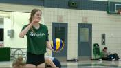

UPDATE: Kelowna girls capture second consecutive B.C. 4A volleyball championship

The top-ranked Kelowna Owls are into Saturday morning’s semifinals at the championships in Langley.
Continue reading →Mandi Fraser stepping out of brother’s shadows with Saskatchewan Huskies
Mandi Fraser said she relies on her brothers Brian and Colin to provide guidance as she continues to improve her volleyball game.
Continue reading →End of an era for U of A volleyball coach Terry DanylukMandi Fraser stepping out of brother’s shadows with Saskatchewan Huskies

Long-time University of Alberta Golden Bears volleyball coach will still be around the gym, but he won’t be on the bench when the team takes the court this season.
Continue reading →Sean McKay relishing role as Saskatchewan Huskies volleyball coach
Sean McKay is looking forward to what he hopes will be a long run with the Saskatchewan Huskies men’s volleyball team.
Continue reading →Football, volleyball action in Saskatoon High School Huddle for Oct. 8
Boys’ football and volleyball are featured in the Oct. 8 segment of High School Huddle with Brenden Purdy.
Continue reading →